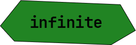
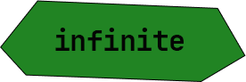


 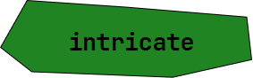
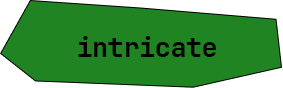
 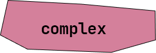
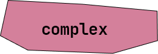


 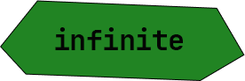
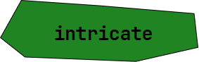
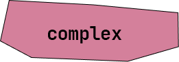
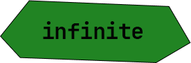
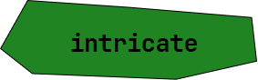
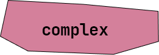
"To the Stars" is a Website Primer that is a visually captivating introduction to the UP Baguio Astronomy Enthusiasts. This project showcases the organization's commitment to sparking interest in Astronomy, fostering a sense of community among enthusiasts, and contributing to the collective understanding of the cosmos, both within and beyond the university.
All materials used are for educational and non-profit purposes only. Any copyright material mirrored on this site is intended for private personal study. All original photographs and articles are copyright to their respective owners. Copyright owners may, if they wish, request to have material removed by leaving a comment on the relevant page. The materials archived, stored,and presented here, are copyrighted by their respective contributors, and may not be saved, re-transmitted, republished, or reformatted by any means, electronic or mechanical. This site offers broad public access to these materials exclusively as a contribution to education and scholarship, and for the private, non-profit use of the academic community.